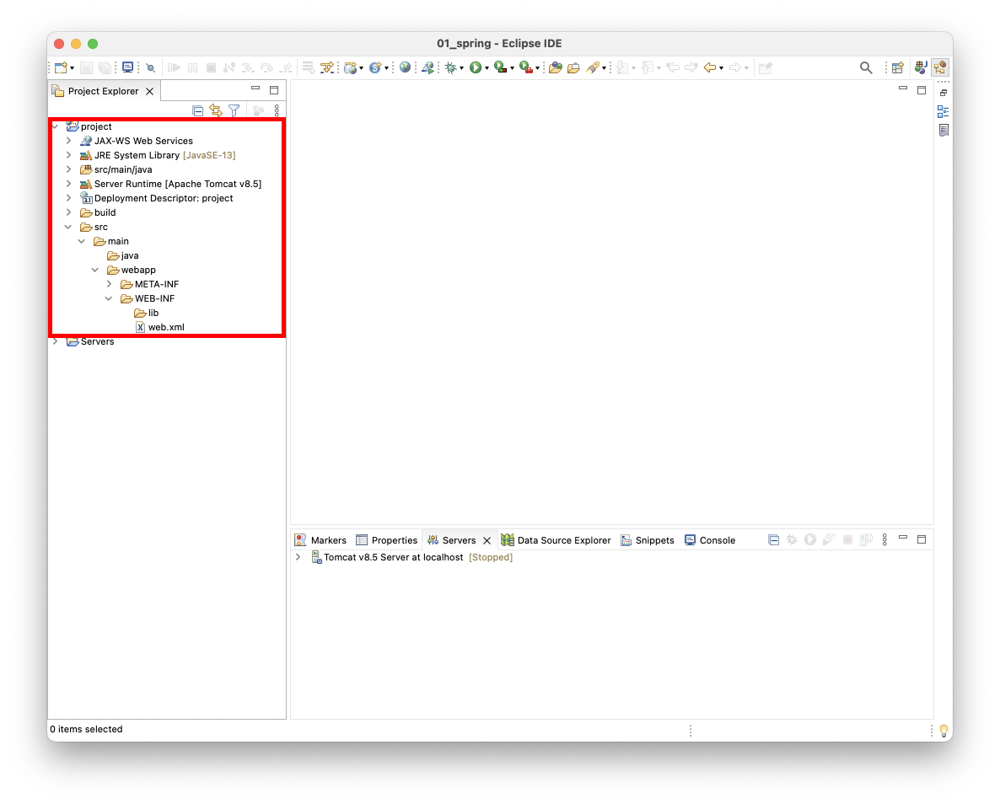

[Servlet, JSP] Eclipse로 Java Web Application 구성하기
Eclipse를 실행하고 File > Project를 선택한 후 Dynamic Web Project를 선택한다.
Project name, Project Location, Target runtime을 적절히 입력하고 Next > 버튼을 누른다.
Source folders on build path는 Java 파일이 위치할 경로다. Default output folder는 빌드된 파일이 위치할 경로다. 확인 후 Next >버튼을 누른다.Context root와 Content directory은 기본값으로 두고 Generate web.xml deployment descriptor를 선택하고 Next >버튼을 누른다.
Context root: WAS(Tomcat)에는 여러 개의 Web Application이 구동될 수 있다. Context root는 WAS위의 Web Application을 구분하는데 사용된다. 예를 들어 Web Appication의 URL이http://yourcompany.com/my_project라면my_project가 context root를 의미한다.Content directory: JSP파일이 저장되는 경로다. JSP파일 외에도META-INF폴더,WEB-INF폴더,web.xml파일 등이 위치한다.enerate web.xml deployment descriptor: WEB.xml 파일을 생성한다.
생성된 프로젝트의 구조는 다음과 같다.

이제 JSP 파일을 생성해보자. src > main > webapp에 JSP 파일을 생성한다.
1 | <%@ page language="java" contentType="text/html; charset=UTF-8" pageEncoding="UTF-8"%> |
Tomcat에서 프로젝트를 실행하기 위해 Run on Server를 선택한다.
Tomcat을 선택하고 Next >를 선택한다.Configured항목으로 프로젝트를 이동시키고 Finish 버튼을 누른다.
Available: 아직 Tomcat에 배포하지 않은 프로젝트Configured: 이미 Toccat에 배포한 프로젝트
이제 웹 브라우저에서 접속할 수 있다.
참고
Eclipse에 Tomcat 서버를 추가하면 Project Explorer에 서버의 디렉토리가 추가된다.server.xml에서는 Tomcat 서버의 설정 파일이다.
Tomcat 서버에는 여러 개의 Web Application을 배포할 수 있다. 배포된 Web Application은 server.xml에서 <context>태그로 등록된다.
1 |
|
<Context>태그의 docBase속성은 프로젝트의 이름이다. 또한 path속성을 통해 Context root를 변경할 수 있다.